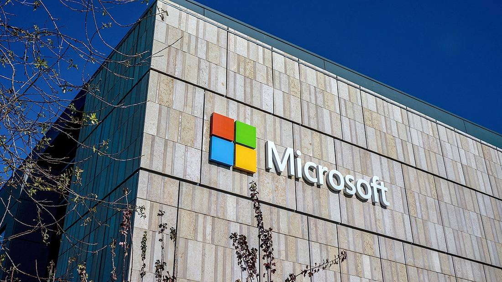

Microsoft Declares Code Red After Historic 24-Hour Outage
Microsoft has declared a "Code Red" mobilization, its most severe internal alert, after the November 12-13 outage that took down Outlook, Teams, Copilot and Exchange Online for nearly 24 hours. M365 Core President Jason Henderson declared the alert in a November 20 memo, calling the incident the most customer-impacting event in Exchange Online history. Microsoft blamed an undetected Windows scalability defect introduced in July, not a cyberattack. The Anderson Economic Group put the cost at roughly $7 billion in lost productivity, and Microsoft set a target of restoring service worldwide within one hour in future incidents.

- 01THE OUTAGE — November 12-13, 2026: A 24-hour outage takes down Outlook, Teams, Copilot, Exchange Online and other Microsoft 365 products, affecting most of Microsoft's 420 to 450 million users. Microsoft later blames an undetected Windows scalability defect introduced in July.
- 02THE APOLOGY — November 18, 2026: Chief executive Satya Nadella publicly apologizes for the disruption at the DealBook Summit. Microsoft publishes its final post-incident report on November 20, calling the incident the most customer-impacting in Exchange Online history.
- 03THE CODE RED — November 20, 2026: M365 Core President Jason Henderson declares a "Code Red" mobilization in a memo to staff, calling the outage the most customer-impacting event in Microsoft's history and the alert the team's highest-priority work.
WHAT HAPPENEDWhat Happened
Microsoft has declared a "Code Red" mobilization inside its Microsoft 365 engineering organization, its most severe internal alert, in response to the 24-hour outage on November 12-13, 2026, that took down Outlook, Teams, Copilot, Exchange Online and other core products. M365 Core President Jason Henderson declared the alert in a memo to staff on Friday, November 20, according to internal memos reviewed by Reuters and first reported on November 24. "Code Red means that this is the highest priority work for our team," Henderson wrote.
Henderson called the incident the most customer-impacting event in the history of Exchange Online. The outage, which lasted 23 hours and 50 minutes, affected most of Microsoft's 420 to 450 million users, according to the company's post-incident report. It disrupted governments in Australia, Japan and the United States, delayed trading firms and interfered with airline communications. Microsoft blamed the failure on a previously undetected Windows scalability defect introduced in July, and said the incident was not related to cyber activity or AI agents.
The scale of the response effort became a story of its own. Microsoft engineers exchanged more than 11,000 messages across 11 Teams chats while diagnosing the failure, corporate vice president Amanda Silver told employees in a Monday memo. The Anderson Economic Group estimated the outage cost the global economy roughly $7 billion in lost productivity. Chief executive Satya Nadella publicly apologized for the disruption at the DealBook Summit on November 18.
WHY IT MATTERSA defect that sat undetected for four months.
The outage was not a novel attack or an exotic failure mode. A scalability defect entered Microsoft's Windows systems in July and went undetected until November, when it knocked out the company's flagship productivity suite for a full day. That is the detail that makes the Code Red more than a post-crisis ritual: the failure was in detection and deployment speed, not in any single component.
Henderson said so directly in a separate memo. Urgent patches to the M365 suite took too long to reach users worldwide. "In a separate recent incident, an urgent production fix took five to six days to reach worldwide saturation. For our most urgent security issues, we need to get from detection to safe worldwide deployment in an hour. Needless to say, we aren't here yet," he wrote. The Code Red is, in effect, an admission that Microsoft's fix pipeline is slower than the failures it now has to survive.
THE RESPONSEFive workstreams and a one-hour target.
Silver outlined five workstreams for the mobilization, focused on load shedding, geographic traffic partitioning and faster recovery mechanisms. Microsoft set a target of restoring service worldwide within one hour in future incidents of similar scale, and plans to deploy AI agents to help engineers diagnose system health data more quickly.
The one-hour target is ambitious against the record just set: the November outage took nearly 24 hours to resolve, and a routine urgent fix took five to six days to saturate globally. Whether the Code Red closes that gap will be judged by the next incident, not by the memos. The test is also public: this is the second major Microsoft 365 failure to draw a company-wide response in as many months, and customers, regulators and rivals will all be watching the recovery time next time.
THE SHIFTWhat Changed
SIGNAL JUDGMENT — ANALYSISThe outage is over; the fix pipeline is the story now.
The Code Red matters less as a reaction to a past outage than as an admission about Microsoft's engineering speed. A defect introduced in July went undetected for four months, and an urgent fix took five to six days to reach every system. The five workstreams and the one-hour recovery target are the right answers, but they are promises, not results. The next outage will be the first real test of whether this mobilization changed anything.
WHAT REMAINS UNCERTAINWhat Remains Uncertain
EVIDENCEEvidence
Microsoft declared a "Code Red" mobilization, its most severe internal alert, after the November 12-13 outage that took down Outlook, Teams, Copilot and Exchange Online for nearly 24 hours. M365 Core President Jason Henderson called it the most customer-impacting event in Exchange Online history; Microsoft blamed an undetected Windows scalability defect introduced in July.
PRIMARY SOURCESPrimary Sources
- Reuters via Fox News: Microsoft declares 'Code Red' after historic service outage
https://foxnews.com/us/microsoft-declares-code-red-historic-service-outage - Reuters via WNCY: Exclusive - Microsoft declares 'Code Red' after historic outage, internal memos show
https://wncy.com/2026/11/24/exclusive-microsoft-declares-code-red-after-historic-outage-internal-memos-show/ - Cryptopolitan: Microsoft launches emergency 'Code Red' after Windows bug goes undetected for months and causes historic global outage
https://www.cryptopolitan.com/microsoft-launches-emergency-code-red/ - The 956 Report: Microsoft Declares 'Code Red' After 24-Hour Outage
https://www.the956report.com/post/microsoft-code-red-outage-outlook-teams-memos